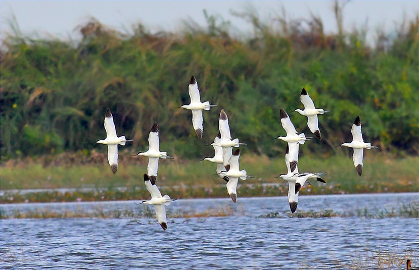

Also known as the Shrine of Our Lady of Perpetual Help.
This church has quite the number of visitors and has a seating capacity of 3,000.
In addition, it can accommodate a standing capacity of about 9,000.

Bird Sanctuary
Where migratory birds from neighboring countries such as China
and even as far as Siberia stay during the winter season.
The best months to view these birds are from August to March.